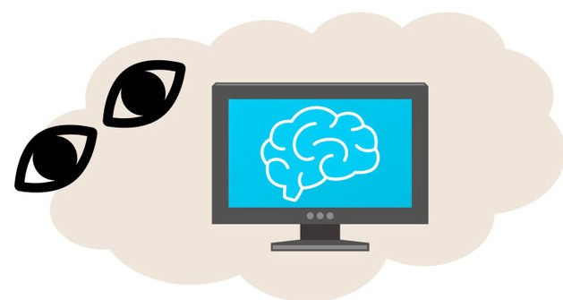
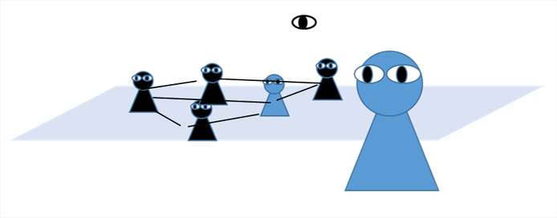
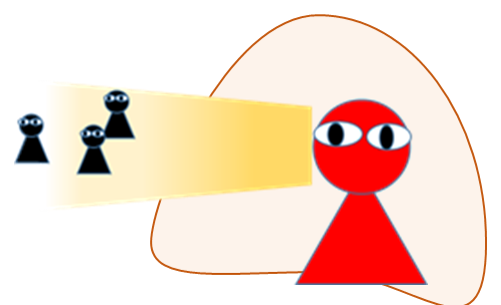

①認知のパターン

３つの違い ①認識の仕方が違う
前者と後者の特徴的な例
a パターンの人の特徴：
- 「もうちょっと周り見ようよ」と指摘される
- 子どもの頃よく物や人にぶつかる
- 集中力や情熱の傾け方を指摘される
- いきなり立ち止まって方向転換する
- 隣の人がいつからそこにいるのかわからないことがある
- 嫌ならやらなければいい、気にしなければいいじゃんと思う
- 天然だと言われる
b パターンの人の特徴：
- 「気にしすぎじゃない？」と言われる
- 見たくなくても見えてしまう
- 「上から目線だよね」「冷たい」と言われて困惑する
- 当たり前に聞こえるはずの距離の声が聞こえていると思う
- 「外から見えること」を基準に類推する
- 頭の中で「ふつうは」をよく考える
- 計算して予想して動くので天然な人がうらやましい
２つの認識のあり方
モニター視点（前者の認識）
常に「全体」があるのが特徴。RPGやボードゲームを眺める視点のように、現実と並行して「全体をシミュレーションしたゲームボード」を持っている。

特徴：
- いろんなものを条件化、平均化した架空の想定世界を持つ
- 「今全体がこうなっている」「あの人がこう」「この場のルールはこう」と考える
- 盤上のネットワーク、関係性、それぞれの役割や条件を考える
- 外から見ている視点がある
- これは性格でも能力でもなく「初期装備」
- 子どもですらやっている
- 「見ている」のではなく「見える」「見えちゃう」
- 見なければいいじゃんではない
- 盤上の情報は常に自動更新される
前者のあり方から生まれる特徴：
- 視野がクローズしたり変化したりしない
- 見えているところで起きたことを自分の責任に感じてしまう
- 動いたほうが楽だと思っている
- 自分は全体の関係性の中のプレイヤーの一人、駒の一つという感覚
- シミュレーション世界の中でずっとサバイバルしているため、そちらも「リアル」という感覚
- 場のルールや関係性や先を読んで、それに沿って動くことができる
- その場での役割を察し、果たす
- 「外から視点」で全体を見ているが、「上から目線だよね」と言われて混乱する
- 人の言動には基本的に「意図」があると思っている
- キャパ内での死角が少ない、安定的
- 盤上の役に合わせて生きて、自分の「ナマの感情や感覚」を見失いがちな面もある
光源（ライト）視点（後者の認識）
後者の認識の仕方は、常に「自分」が起点で中心。自分が主役、自分が「自分の世界」の中心。むしろ世界＝自分。

イメージ：
顔面にサーチライトや大きなカメラが１つあり、自分が見たものが世界。「自己中心的」という言葉がありますが、他意なくフラットに、文字通りにそういう認知。
前者との違い：
前者は客観的にデータが増えるイメージだが、後者は主観的な「自分」が拡大するイメージ。自分の島が充実していく、自分の世界に対象を取り込みながら成長するイメージ。
特徴：
- 起点が１つのため視野がすぐに変化・開閉する
- ライトの種類や範囲は変えられるので狭い人も広い人もいる
- 死角が出やすいかわりにエネルギー投下量が高い
- 認識が一方向的であり、それに自覚がない
後者の最大の問題点：
常に「自分→何か」という視点でものごとを認識するため「相手から見える自分」というものが意識内にない。頭では知ってはいるが「リアリティがゼロ」。
相手の「気持ち」の想像や自己客観視、「人目を気にする」などはしている人も多いだけに、他人視点＝「どう"見える"か」を考えていないことに自覚がない。
ダイレクトな気持ちや人目は考えるが、具体的な相手の「立場」「条件」でものを考えない。そこから自分を見られない。視点の立ち位置を変えるのが苦手。
そのため：
- よかれと思ってやったことが、相手や周りに白い目で見られる
- 注意されても「やっているつもりなのに…」と思ったり
- 何を指摘されているのかがそもそもわからない
- 善意を悪意に誤解される
後者のあり方から生まれる特徴：
- 認識は常に「自分」→「なにか」の一方向
- 嫌なこと、興味のないことが視界から外れやすい
- 自分発にストレートに動き、興味のある・ないでパフォーマンスが段違い
- 主観的動機はあるが、言動に特に意図はない
- 自己動機がない行動のほうが理解できない
- 死角が発生しがちだが好きなことには無限のエネルギーを投下
- 起点としての「自分」は常にあるが、全体がないので「今」「どこ」という座標がない（目標地点はわかる）
後記
学習や努力で俯瞰や客観は身につけられる。またシチュエーションによっては、後者も前者っぽいことするし、前者も後者っぽいことはする。これは初期設定がどうか、ひらたくいえば「気を抜いたベース状態がどうか」という話。